Bienvenido al Manual de Usuario de Dillearning
Tu guía para aprender un nuevo idioma de forma interactiva y con la ayuda de la IA.
¿Qué es Dillearning?
Dillearning (del turco "dil", que significa idioma) es una aplicación de código abierto diseñada para que el aprendizaje de idiomas sea accesible, pedagógico y centrado en un uso realista del lenguaje.
Primeros Pasos
Puedes acceder a la aplicación de varias maneras:
- Web: dillearning.com
- Android: Descargando desde la Play Store (próximamente).
- Linux: Instalando el paquete .deb en distribuciones como Ubuntu o Debian.
Paso 1: Iniciar Sesión
Al abrir la aplicación, verás la pantalla de inicio de sesión. Si ya tienes una cuenta, introduce tus credenciales aquí.
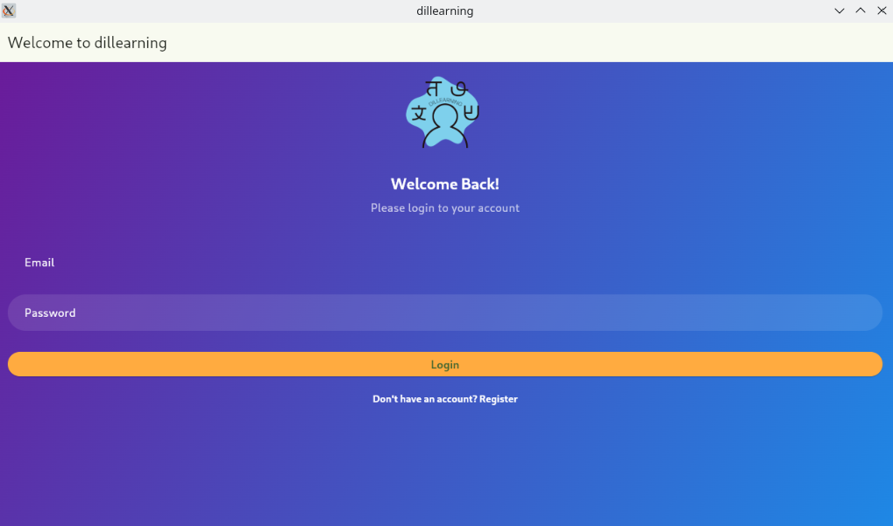
Paso 2: Crear una Cuenta
Si eres un usuario nuevo, pulsa en "Regístrate" para crear tu cuenta. Solo necesitas un nombre, un correo electrónico y una contraseña.
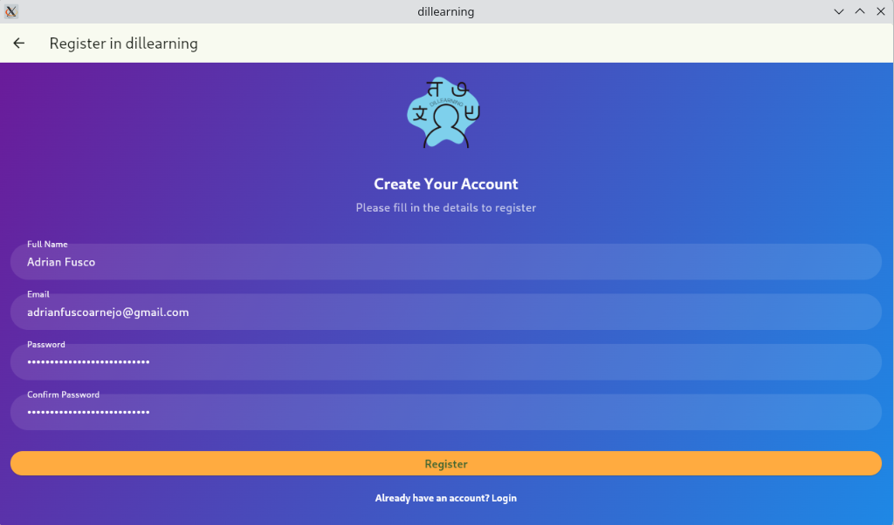
Paso 3: Pantalla Principal
Tras iniciar sesión, llegarás al menú principal. Desde aquí puedes explorar los cursos, acceder a las herramientas de IA o configurar tu perfil.
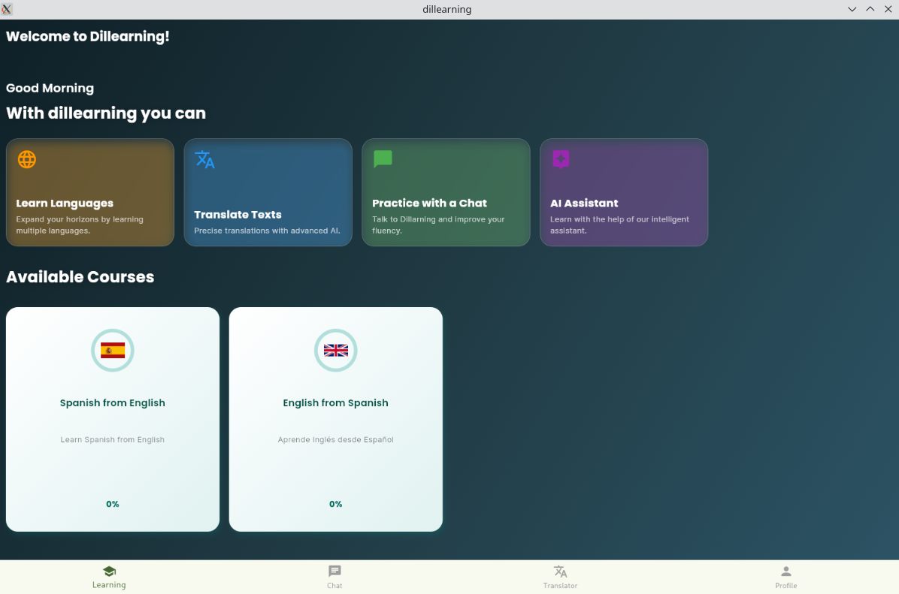
Herramienta IA: Chat
Haz preguntas sobre gramática, vocabulario o simplemente practica tu conversación en el idioma que estás aprendiendo.
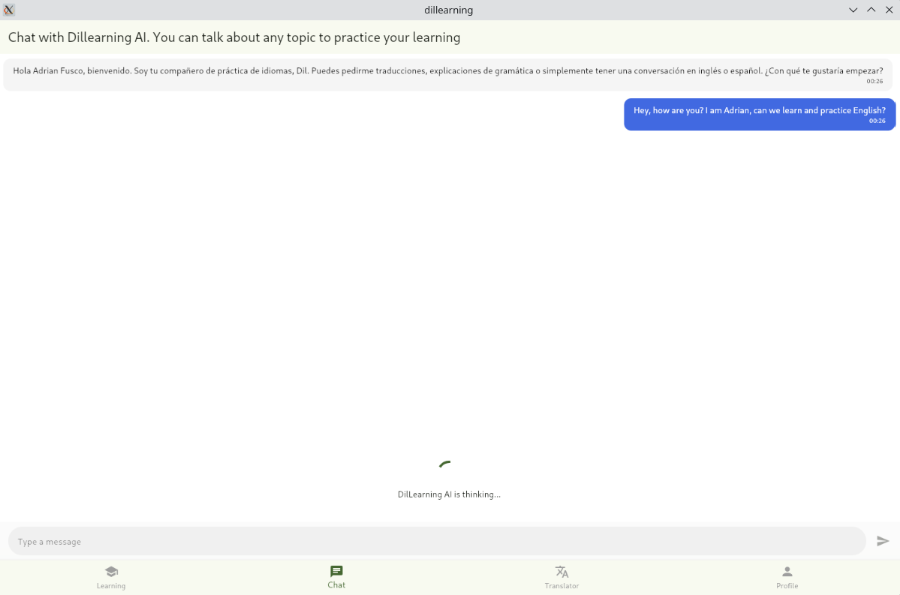
Ejemplo de Conversación con IA
La IA te responderá y corregirá tus errores, ayudándote a mejorar tu fluidez y precisión.
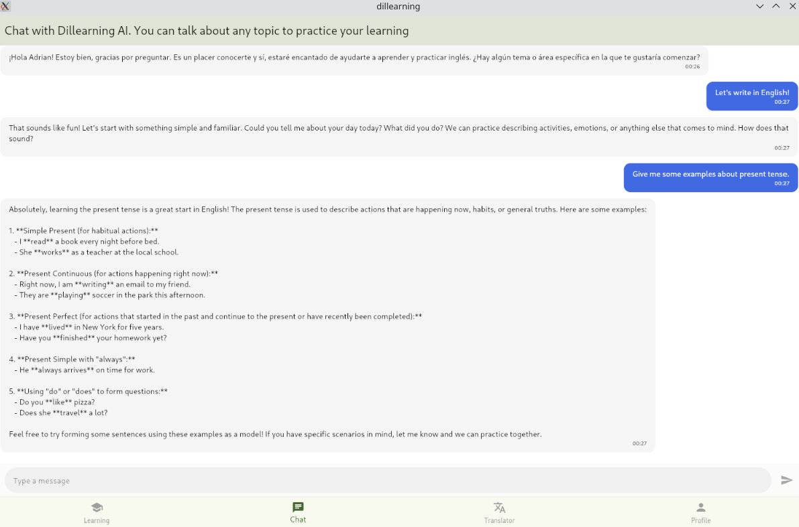
Herramienta IA: Traductor
¿No estás seguro de una palabra o frase? Utiliza el traductor para obtener una respuesta rápida y precisa.
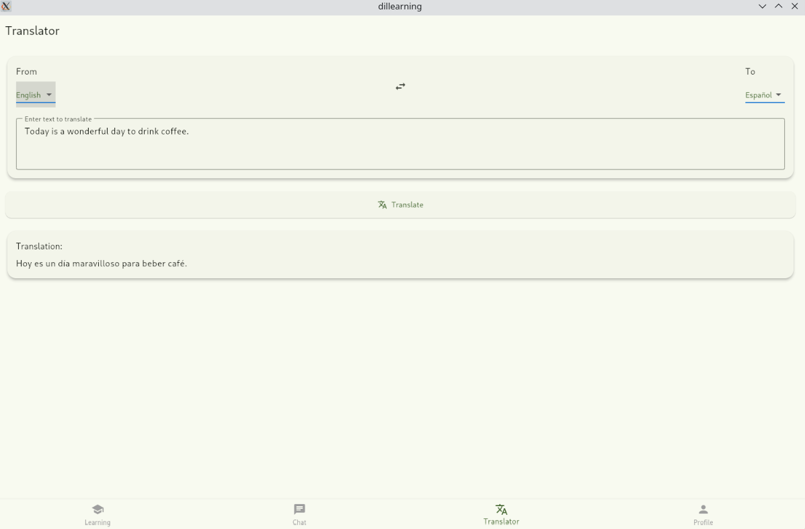
Tu Perfil
Accede a tu perfil para cambiar el idioma de la interfaz o seleccionar tu tema preferido (claro u oscuro).
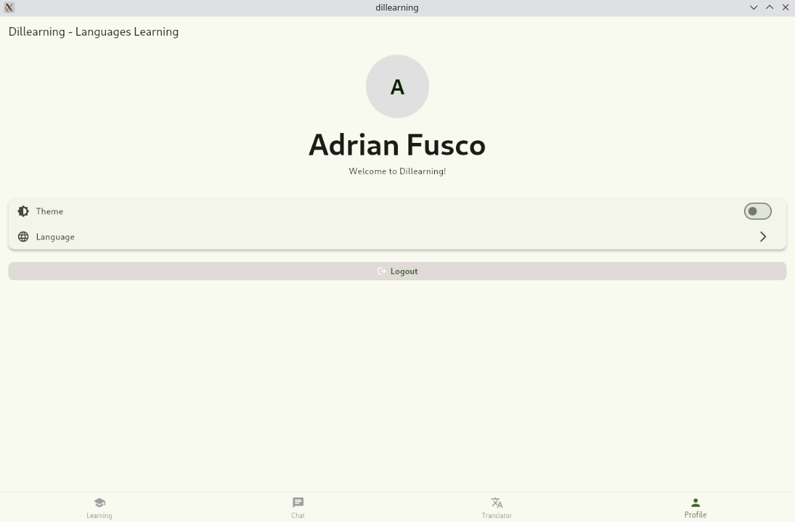
Tema Oscuro
Dillearning también está disponible en modo oscuro para una experiencia visual más cómoda en condiciones de poca luz.
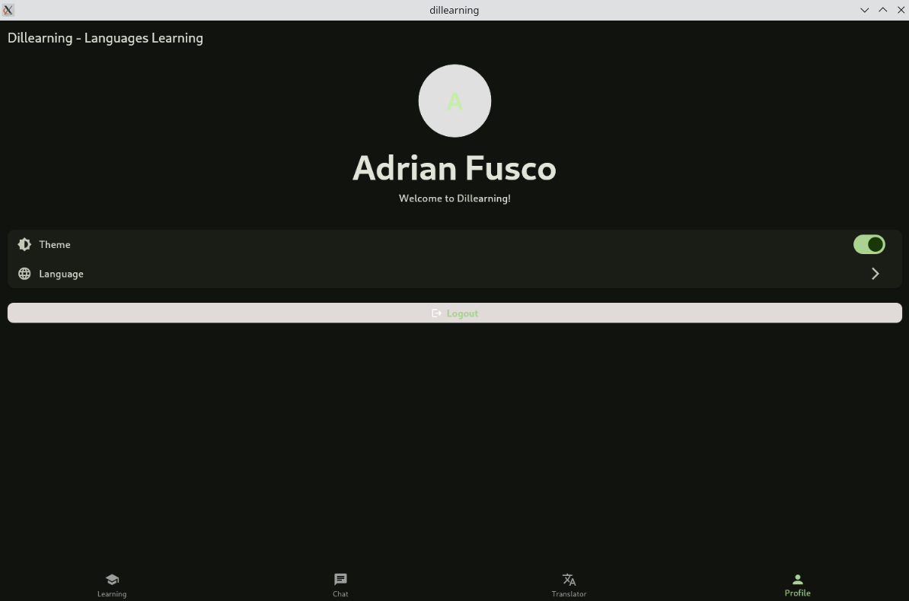
Cambio de Idioma
Puedes cambiar el idioma de la interfaz de la aplicación en cualquier momento desde tu perfil.
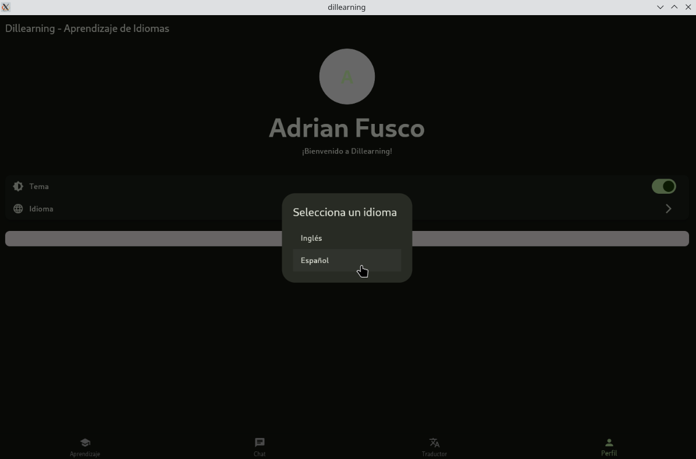
Aprendizaje: Unidades del Curso
Cada curso se divide en unidades temáticas. Completa las unidades en orden para construir tu conocimiento de forma progresiva.
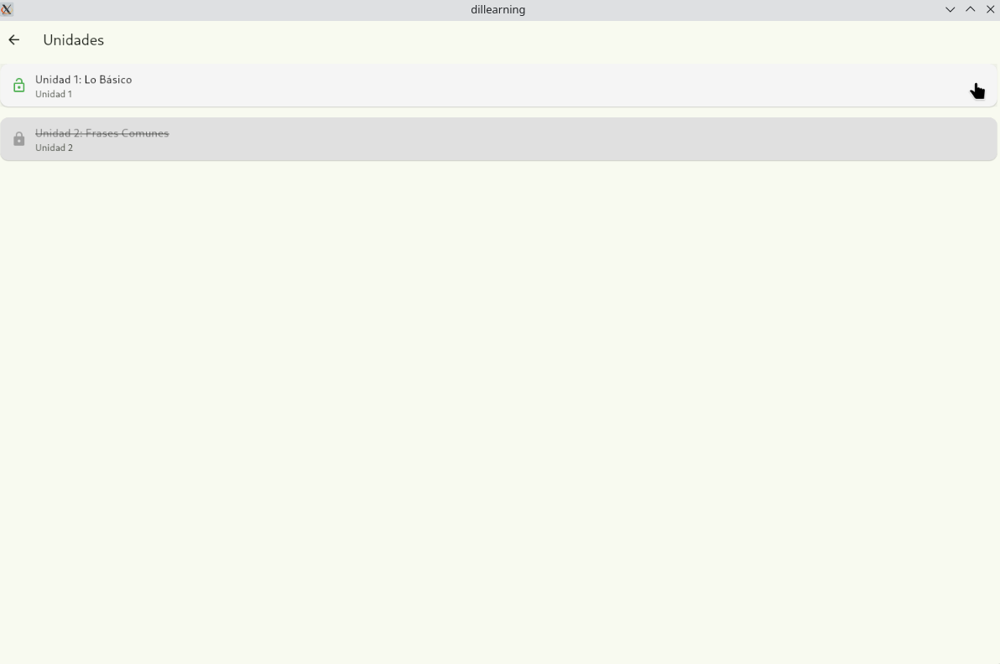
Aprendizaje: Lecciones
Dentro de cada unidad, encontrarás lecciones que te introducen a nuevos conceptos y vocabulario.
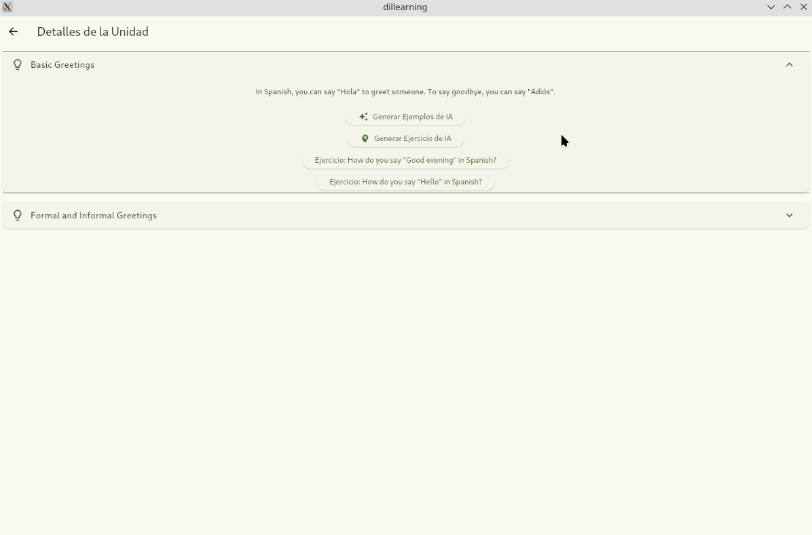
Aprendizaje: Ejercicios
Pon a prueba lo que has aprendido con ejercicios interactivos al final de cada lección.
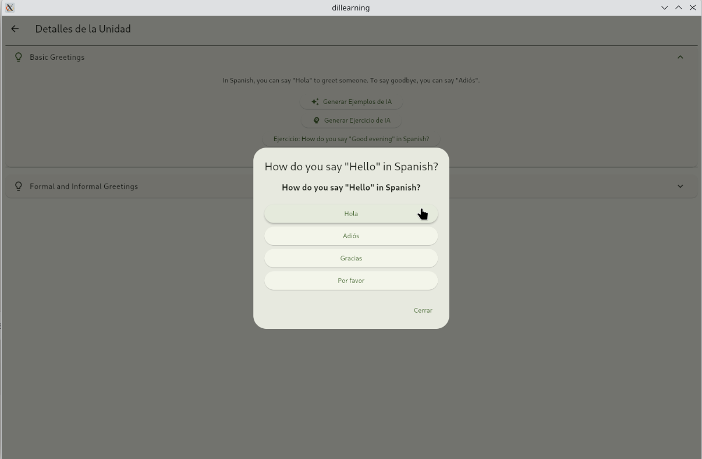
¡Listo para Aprender!
Ya conoces las funcionalidades principales de Dillearning. ¡Disfruta de tu viaje de aprendizaje!